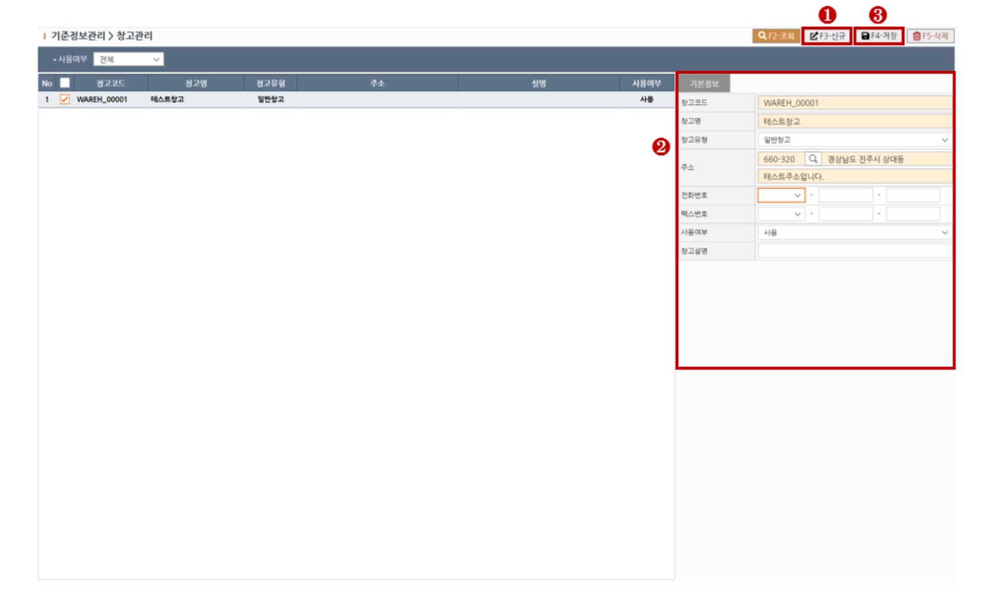
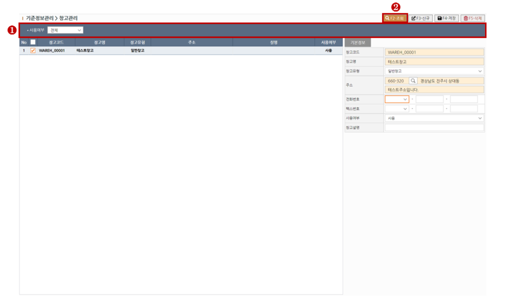
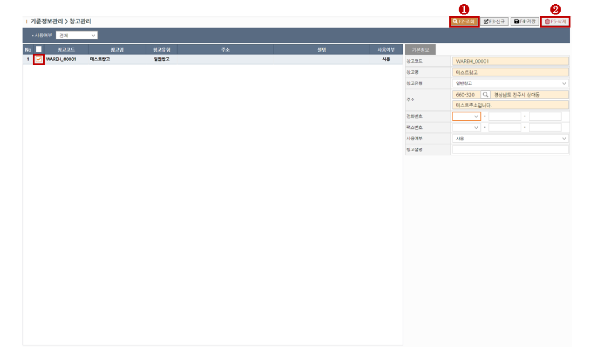

1. 신규 창고 생성하기
> STEP-1 새로운 창고 추가를 원하실 경우 상단의 신규(F3)버튼을 클릭하여 행을 추가합니다.
> STEP-2 창고 기본정보를 입력합니다. 노란색필드는 필수입력입니다.
> STEP-3 기본정보입력을 완료하셨다면 상단의 저장(F4)버튼을 클릭하여 저장합니다.

※ 필드설명1 - 창고코드
[창고코드]는 중복으로 저장하실 수 없습니다.
2. 조회하기
> STEP-1 상단의 조회조건에 조회할 점소를 입력합니다.
> STEP-2 상단의 조회(F2)버튼을 클릭하여 조회합니다.

3. 삭제하기
> STEP-1 상단의 조회(F2)버튼을 클릭하여 대상을 조회합니다.
> STEP-2 대상을 그리드에서 체크한뒤 상단의 삭제(F5)버튼을 클릭하여 대상을 삭제합니다.
